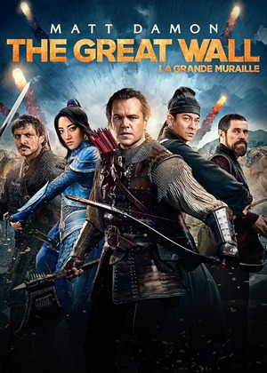
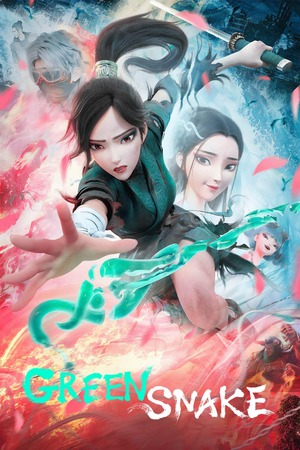
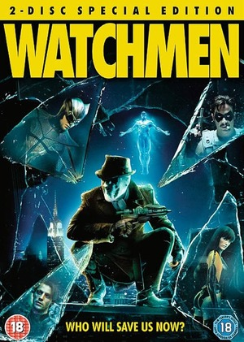
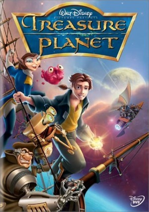
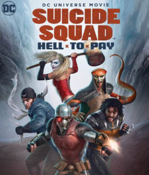
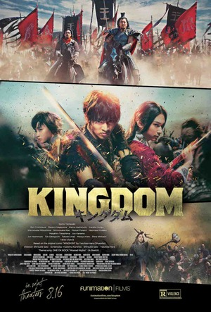
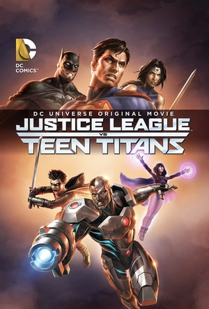
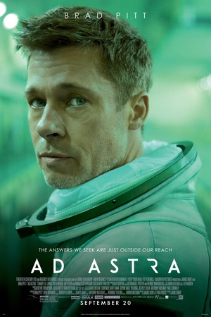

The Great Wall
Movie Overview:
While searching for gunpowder in China during the Song Dynasty, two European mercenaries- William Garin and Tovar- accidentally discover a secret army, the Unnamed Order, which defends the Great Wall of China from a siege imposed by mythical monsters, called the Tao Tei. After joining forces with the Unnamed Order’s head of the all female Crane Corps, Commander Lin, William Garin utilizes his advanced archery skills to protect the Great Wall against the Queen of the Tao Tei, in order to save the world.
Green Snake
Movie Overview:
The movie, Green Snake, is a Chinese animated mythical fantasy & action film about the duo of green snake demons, Verta and Blanca. After a fight with the demon-slaying-monk, Fahai, Blanca is captured and trapped under a temple meanwhile Verta gets sent to a dystopian cyberpunk city called Asuraville. In order to survive the new world’s violent terrain and find a way to free her sister from Fahai’s imprisonment, Verta must escape from the dangerous city filled with various other imprisoned creatures and gang conflicts, while forming unexpected alliances and navigating personal battles along the way.
The Watchmen (2009 Film Version)
Movie Overview:
The movie, Watchmen, is an adaptation made in 2009 of the original graphic novel. It’s set in an alternate version of the year, 1985, where the Cold War is intensifying, and costumed vigilantes are outlawed. The plotline opens with the murder of a retired “hero”, the Comedian, which leads his former colleague, Rorschach, to investigate a potential threat to all vigilantes whilst navigating the terms of their collective problematic pasts, including Rorschach, Nite Owl, Silk Spectre the second, Ozymandias, and the superpowered Dr. Manhattan.
Ender's Game
Movie Overview:
Ender's Game is a 2013 science fiction movie about a gifted young boy, Ender Wiggin, who is recruited by the military to train at Battle School to become a leader capable of defending Earth from an alien race called the Formics, which had terrorized Earth in the past.

Batman Vs Robin
Movie Overview:
The movie, Batman vs Robin, follows Damian Wayne, who has now taken over as the new Robin, as he rebels against his father Bruce Wayne's no-killing rule. After a conflict with the murderous Toyman, he’s initially manipulated by the assassin Talon, who works for the secret society known as the Court of Owls, into questioning Batman's values. This conflict results in Robin becoming isolated from Batman and Nightwing as he falls further into Talon’s guidance, which ultimately leads to him having to make the crucial choice between embracing the future with Talon and remaining under his father, Batman’s watchful rule.

Godzilla: King of Monsters
Movie Overview:
After a human eco-terrorist group awakens an extraterrestrial Titan, monster X, by using an ancient bio-acoustic device, the "Orca”, in order to carry out their vision of the restoration of Earth, after the destruction caused by humans. Thus causing a fight for dominance between Godzilla and the Monarch against monster X, which later becomes crowned as King Ghidorah.

Treasure Planet
Movie Overview:
The movie, Treasure Planet, follows intelligent engineer and rebel- Jim Hawkins- as he’s entrusted by a murdered pirate captain with a treasure map leading to the legendary Captain Flint's planet of loot. With the help of his family’s friend, they both hire a starship crew, led by Captain Amelia and the rowdy crew led by the mysterious cyborg cook, Silver, to find the treasure. After fights with the violent crew, Jim ends up forming a deep father-son bond with Silver, who’s hiding secrets of his own.
Black Panther 2
Movie Overview:
Following Wakanda's grief over the loss of their beloved King T’Challa, Princess Shuri assumes the position of Black panther after the word turns on Wakanda in paranoia. The grieving nation led by a morally torn Shuri has to face new threats from outside powers of the advanced and mythical underwater nation of Talokan, and its ruthless leader, Namor.

Suicide Squad-Hell To Pay
Movie Overview:
paragraphy text
Kingdom
Movie Overview:
paragraph text here
Teen Titans Vs Justice League
Movie Overview:
paragraphy texty text
Ad Astra
Movie Overview:
paragraphy text
